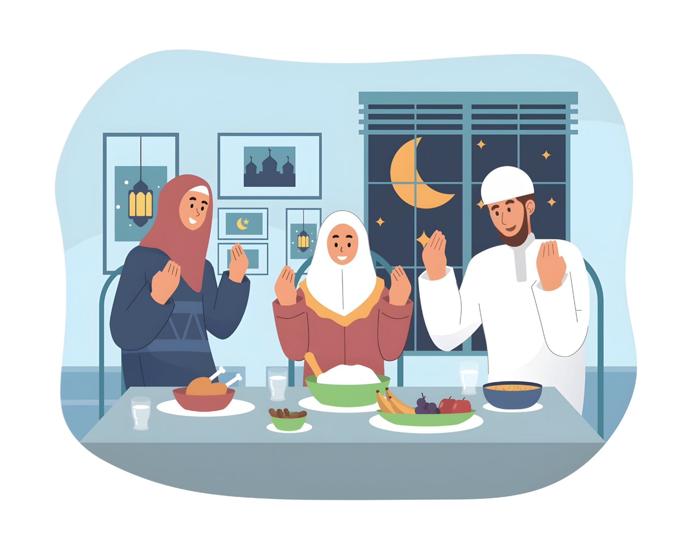

🌙 A Simple Guide to Ramadhan: Filipino Muslim Meals & Fasting Tips
Ramadhan is a time of fasting, reflection, and togetherness. For Filipino Muslims, food plays a meaningful role in keeping the body strong while observing the fast. Here are simple, familiar, and practical meal ideas paired with easy fasting tips.
🍽 Suhoor (Pre-Dawn Meals)
Suhoor should be light, filling, and long-lasting.
Simple Suhoor Ideas:
- Rice + Fried Egg + Dried Fish (Tuyo or Daing) – A classic, affordable meal that gives protein and energy.
- Lugaw with Egg – Easy on the stomach and comforting, especially for early mornings.
- Boiled Kamote or Saba Banana – Provides natural energy and helps you feel full longer.
- Oatmeal with Dates or Banana – A modern but practical option for slow energy release.
Suhoor Tips:
- Don’t skip suhoor—it helps prevent fatigue and dizziness.
- Drink 1–2 glasses of water before fajr.
- Avoid very salty food to reduce thirst during the day.
🌅 Iftar (Breaking the Fast)
Iftar should restore energy gently, not overwhelm the stomach.
Traditional & Simple Iftar Choices:
- Dates & Water – Sunnah and the best way to start iftar.
- Ginataang Bilo-bilo or Ginataang Mais – Warm, filling, and culturally familiar.
- Camote Cue or Banana Cue (in moderation) – A quick source of sugar after fasting.
- Buko Juice or Salabat (Ginger Tea) – Refreshing and good for digestion.
After Iftar Meal Ideas:
- Chicken or Beef Piaparan – Flavorful but not too oily.
- Chicken Pastil – Simple rice meal with protein.
- Fish Sinigang or Vegetable Soup – Light, hydrating, and nutritious.
- Ginisang Gulay (Kangkong, Sayote, or Kalabasa) – Helps balance heavy meals.
💧 Staying Healthy While Fasting
Easy Health Tips:
- Drink water gradually from iftar to suhoor.
- Eat slowly to avoid stomach discomfort.
- Balance rice, protein, and vegetables.
- Limit sugary drinks and deep-fried food.
🤍 Gentle Reminder
Ramadhan is not about eating a lot—it is about discipline, patience, and gratitude. Simple meals shared with family are more meaningful than extravagant ones.